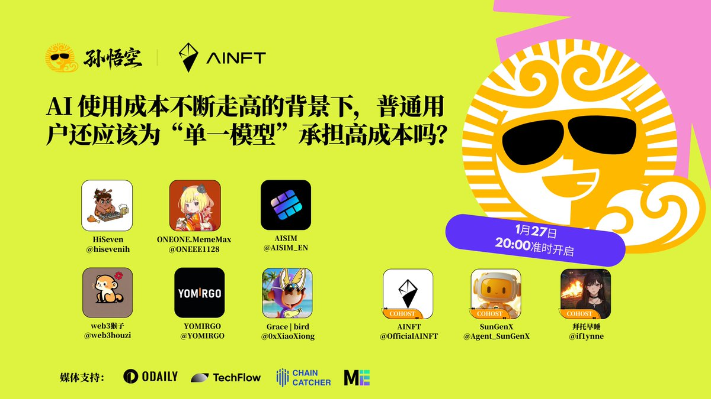

疑心病
@yixinbing2026
RT @SUNWUKONG_ZH: 🎙️ AI 使用成本不断走高的背景下，普通用户还应该为“单一模型”承担高成本吗？
🎯 大模型持续进化，AI 正从“尝鲜工具”变为“日常基础设施”。但随之而来的，是使用成本的快速上升：从高频订阅到频繁切换平台，用户如何才能长期受益？一个更灵活…

孙悟空生态
@SUNWUKONG_ZH
🎙️ AI 使用成本不断走高的背景下，普通用户还应该为“单一模型”承担高成本吗？
🎯 大模型持续进化，AI 正从“尝鲜工具”变为“日常基础设施”。但随之而来的，是使用成本的快速上升：从高频订阅到频繁切换平台，用户如何才能长期受益？一个更灵活、更可持续的 #Web3 原生 #AI 架构，是否正成为新的答案？ https://t.co/JTt1QSc0Mh